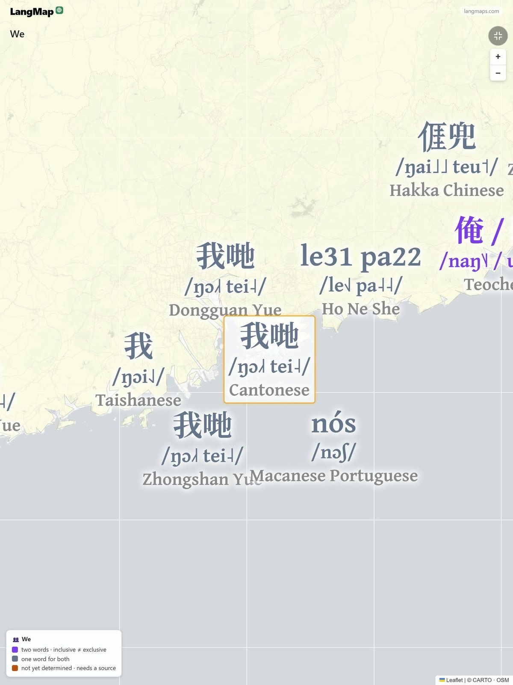

Sinosphere · · revised · Facebook post
嘅, 喺, 唔: Writing Cantonese as Cantonese
- Type colloquial Cantonese in Hong Kong and you meet characters standard written Mandarin rarely, if ever, needs.
- Many are built by adding 口 "mouth" to a sound component, as in 啲, 喺 and 嘅.
- They are not one category; some are ancient survivals, some old characters given new jobs, some sound loans.

Contents
Characters for Cantonese grammar
Type colloquial Cantonese on a phone in Hong Kong and you will quickly meet characters you would rarely, if ever, need in standard written Mandarin.
Written Cantonese has conventional characters for some of its most basic grammatical words.
嘅 ge3 marks possession or modification, roughly Mandarin 的.
我嘅朋友
ngo5 ge3 pang4 jau5
"my friend"
喺 hai2 means "at, in" or "to be at," roughly Mandarin 在.
我喺香港
ngo5 hai2 Hoeng1 Gong2
"I'm in Hong Kong"
唔 m4 is the basic negator, roughly Mandarin 不.
我唔知
ngo5 m4 zi1
"I don't know"
咁 gam3 means "so, that [degree]," roughly Mandarin 這麼 / 那麼.
咁大
gam3 daai6
"so big"
啲 di1 marks an indefinite quantity or degree, roughly Mandarin 些 / 一些.
啲人
di1 jan4
"some people / those people"
Even "we" needs one. The Word Map at the top of this article shows Cantonese 我哋, "I" plus a plural marker written with yet another mouth-character, against Mandarin 我們.
Add a mouth
But where did these characters come from?
There is no single answer.
Some Cantonese characters are old Chinese characters that survived locally or acquired new Cantonese uses.
Others were borrowed mainly for their sound.
And many follow a particularly Cantonese-looking strategy: add 口 "mouth" to a phonetic component.
啲 is built from 口 + 的
喺 is written with 口 + 係
嘅 has 口 + 既
The 口 component does not literally mean "mouth" in each word. In this kind of writing it often signals something closer to:
"This is a spoken Cantonese form. Read the other part mainly for its sound."
Some come with a story. 咩 me1, "what?", is written with a character that originally stood for a sheep's bleat: 口 "mouth" + 羊 "sheep."
Older than texting
The practice is not a recent invention of texting culture.
Nineteenth-century Cantonese texts already contain many of the same forms. Cantonese Bible translations from that period used characters such as 嘅, 喺, 嚟 and 佢 to write spoken grammar directly.
The same characters later reached Hong Kong newspapers. Apple Daily (until it was forced to close in 2021) and Oriental Daily carried Cantonese vernacular writing (粵語白話文) for years in columns, entertainment and gossip pages and racing sections, while their news pages stayed in Standard Written Chinese.
All five of the workhorses above are encoded in Unicode's basic CJK block. Mainland China's 2013 Table of General Standard Chinese Characters (通用规范汉字表), however, leaves out 嘅, 喺, 咁 and 啲. 唔 is on the list, but as a Mandarin interjection, "hmm," not as a negator.
Old characters, new jobs
And the history gets even messier.
嘅 itself is an old Chinese character found in classical dictionaries, but its ancient meaning was different. Cantonese reused the graph for its modern grammatical particle, a word that most likely developed from the classifier 個.
咁 is also an old graph that existed before modern written Cantonese, but Cantonese gave it its familiar everyday role.
唔 writes a word that belongs to an ancient family of m- negatives, the same family as 無 and 毋, and as the syllabic negator m of Hokkien and Hakka.
Then there are characters such as 諗 nam2, "to think."
諗 is not a modern Cantonese invention at all. It occurs in old Chinese texts with meanings related to thinking, remembering and advising. It became rare in standard written Chinese, while Cantonese kept it alive in ordinary speech:
我諗...
ngo5 nam2...
"I think..."
Same tradition, different language
So "Cantonese characters" are not one neat category.
Some are ancient survivals.
Some are old characters reused for new jobs.
Some are phonetic loans.
Some were created or reshaped using the same principles that Chinese characters have used for thousands of years.
What Hong Kong did was not create a completely separate script.
It developed ways to make Chinese characters write Cantonese as Cantonese.
我不知道: standard written Chinese
我唔知: written Cantonese
Same character tradition.
Different spoken language.
Different grammar.
And sometimes, different characters.